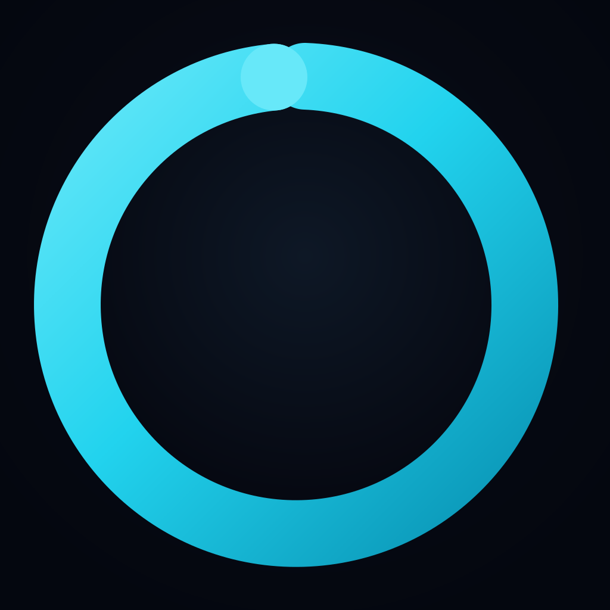

Repit Privacy Policy
Mindfulness repetition timer for iOS
Repit (“the App”) is a mindfulness repetition timer. We built it to stay private and simple: no account, no ads, and no sale of personal data. This policy explains what information the App uses and how it is handled.
Summary
- Repit does not require an account.
- Practice settings and session totals are stored locally on your device.
- We do not collect, transmit, or sell personal information to our servers.
- Face ID / Touch ID authentication is processed entirely by your device’s operating system.
- Subscriptions are billed through Apple; we do not receive or store your payment card details.
Information stored on your device
The App saves the following locally using your device’s storage (localStorage on web; the same data in the iOS app shell):
- Target repetition count and interval settings
- Selected sound and haptic preferences
- Focus lock and app-lock preferences
- Lifetime session count and total repetitions completed
- Optional display name, if you choose to provide one during onboarding
This data stays on your device unless you delete the App or clear its data. We cannot access it remotely.
Biometric authentication (Face ID / Touch ID)
If you enable app lock, Repit may ask you to unlock using Face ID or Touch ID when returning to the App. Biometric verification is handled by iOS through Apple’s secure APIs. Repit does not receive, store, or transmit your biometric data.
Subscriptions
Repit offers an optional subscription after a free trial. All payment processing is handled by Apple through your Apple ID. We do not receive, store, or have access to your payment card or billing details. Subscription status may be checked on your device to unlock app features; we do not operate our own billing servers.
Network use
Repit works fully offline for core timer functionality. Tick sounds — including Mala — are bundled in the App or generated on-device with Web Audio. No network connection is required to play sounds during a session.
What we do not collect
- Name, email, or contact information (unless you contact us voluntarily)
- Location data
- Health or medical records
- Analytics, advertising identifiers, or cross-app tracking
- Photos, contacts, or other device content
Children’s privacy
Repit is not directed at children under 13, and we do not knowingly collect personal information from children. The App does not require registration.
Data retention and deletion
All App data is stored on your device. Uninstalling Repit removes locally stored App data. You can reset session statistics by clearing the App’s data or reinstalling.
Changes to this policy
We may update this policy from time to time. The “Last updated” date below will change when we do. Continued use of the App after an update means you accept the revised policy.
Contact
Questions about this policy? Contact the developer through the support link listed on the App Store page.
Last updated: July 25, 2026